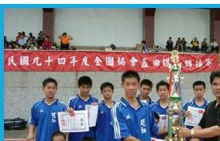
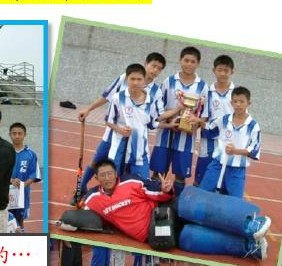
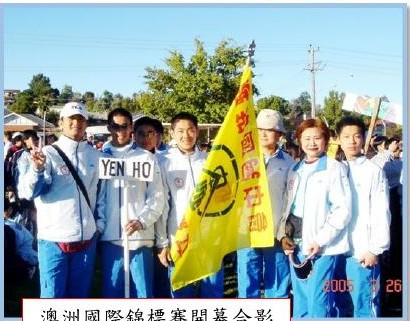
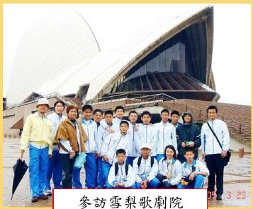
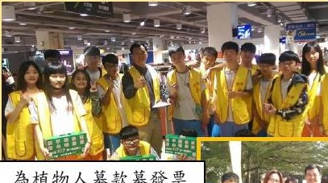
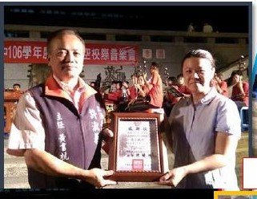
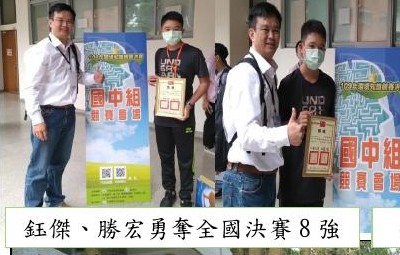

重新拆解・重新觀看
照片裡的教育，
每一格都是現場。
把履歷中的拼貼頁，拆成一張張可以被閱讀的現場切片。從球場的汗水，到校園裡安靜而持續的陪伴。
24個現場切片
INDEX / PHOTO STORIES
四種現場，同一個信念。












FIELD NOTE
「教練是那個比我自己，
還更相信自己會拿冠軍的人。」
照片不是成果展示而已，也是關係留下來的證據：有人帶隊、有人等待、有人在孩子還不相信自己的時候，先替他相信。
回到完整教育故事 →